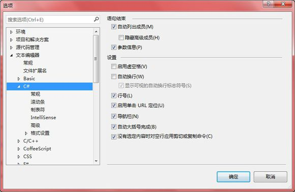

C# Sintaxis básica
C# es un lenguaje de programación orientado a objetos. En el método de programación orientado a objetos, un programa está compuesto por varios objetos que interactúan entre sí. Los objetos del mismo tipo suelen tener el mismo tipo, o en otras palabras, están en la misma clase (class).
Por ejemplo, tomemos el objeto Rectangle (rectángulo). Tiene propiedades length y width. Según el diseño, puede necesitar aceptar estos valores de propiedad, calcular el área y mostrar los detalles.
Veamos la implementación de una clase Rectangle (rectángulo) y aprovechemos para analizar la sintaxis básica de C#:
Ejemplo
namespace RectangleApplication
{
class Rectangle
{
// Variables miembro
double length;
double width;
public void Acceptdetails()
{
length = 4.5;
width = 3.5;
}
public double GetArea()
{
return length * width;
}
public void Display()
{
Console.WriteLine("Length: {0}", length);
Console.WriteLine("Width: {0}", width);
Console.WriteLine("Area: {0}", GetArea());
}
}
class ExecuteRectangle
{
static void Main(string[] args)
{
Rectangle r = new Rectangle();
r.Acceptdetails();
r.Display();
Console.ReadLine();
}
}
}
Pruébalo »
Cuando el código anterior se compila y se ejecuta, produce el siguiente resultado:
Length: 4.5 Width: 3.5 Area: 15.75
usingPalabras clave
La primera declaración en cualquier programa de C# es:
using System;
usingLa palabra clave using se utiliza para incluir espacios de nombres en el programa. Un programa puede contener múltiples declaraciones using.
classPalabras clave
classLa palabra clave class se utiliza para declarar una clase.
Comentarios en C#
Los comentarios se utilizan para explicar el código. El compilador ignora las entradas de comentarios. En un programa de C#, los comentarios multilínea comienzan con/*y terminan con el carácter*/, como se muestra a continuación:
/* 这个程序演示 C# 的注释 使用 */
Los comentarios de una sola línea se representan con//el símbolo. Por ejemplo:
// 这一行是注释
Variables miembro
Las variables son atributos o miembros de datos de una clase, utilizados para almacenar datos. En el programa anterior,Rectanglela clase tiene dos variables miembro llamadaslength 和 width。
Funciones miembro
Una función es una serie de declaraciones que ejecutan una tarea específica. Las funciones miembro de una clase se declaran dentro de la clase. La clase Rectangle de nuestro ejemplo contiene tres funciones miembro: AcceptDetails、GetArea 和 Display。
Instanciar una clase
En el programa anterior, la claseExecuteRectanglees una clase que contiene el métodoMain() y la instanciación de la claseRectangle.
Identificadores
Los identificadores se utilizan para identificar clases, variables, funciones o cualquier otro elemento definido por el usuario. En C#, la denominación de las clases debe seguir las siguientes reglas básicas:
- Los identificadores deben comenzar con una letra, un guion bajo o@y luego pueden ir seguidos de una serie de letras, dígitos (0-9), guiones bajos (_) y @.
- El primer carácter de un identificador no puede ser un número.
- Los identificadores no deben contener espacios en blanco incrustados ni símbolos, como ? - +! # % ^ & * ( ) [ ] { } . ; : " ' / \.
- Los identificadores no pueden ser palabras clave de C#. A menos que tengan un prefijo @. Por ejemplo, @if es un identificador válido, pero if no lo es, porque if es una palabra clave.
- Los identificadores distinguen entre mayúsculas y minúsculas. Las letras mayúsculas y minúsculas se consideran letras diferentes.
- No pueden tener el mismo nombre que las bibliotecas de clases de C#.
Palabras clave de C#
Las palabras clave son palabras reservadas predefinidas por el compilador de C#. Estas palabras clave no se pueden usar como identificadores, pero si desea usarlas como identificadores, puede agregar el carácter @ como prefijo delante de la palabra clave.
En C#, algunas palabras clave tienen un significado especial en el contexto del código, como get y set, y se denominan palabras clave contextuales (contextual keywords).
La siguiente tabla enumera las palabras clave reservadas (Reserved Keywords) y las palabras clave contextuales (Contextual Keywords) en C#:
| Palabras clave reservadas | ||||||
| abstract | as | base | bool | break | byte | case |
| catch | char | checked | class | const | continue | decimal |
| default | delegate | do | double | else | enum | event |
| explicit | extern | false | finally | fixed | float | for |
| foreach | goto | if | implicit | in | in (generic modifier) | int |
| interface | internal | is | lock | long | namespace | new |
| null | object | operator | out | out (generic modifier) | override | params |
| private | protected | public | readonly | ref | return | sbyte |
| sealed | short | sizeof | stackalloc | static | string | struct |
| switch | this | throw | true | try | typeof | uint |
| ulong | unchecked | unsafe | ushort | using | virtual | void |
| volatile | while | |||||
| Palabras clave contextuales | ||||||
| add | alias | ascending | descending | dynamic | from | get |
| global | group | into | join | let | orderby | partial (type) |
| partial (method) | remove | select | set | |||
Instrucciones de nivel superior (Top-Level Statements)
En la versión C# 9.0, se introdujo el concepto de instrucciones de nivel superior (Top-Level Statements), un nuevo paradigma de programación que permite a los desarrolladores escribir instrucciones directamente en el nivel superior del archivo, sin necesidad de encapsularlas en métodos o clases.
Características:
-
Sin necesidad de clases o métodos: las instrucciones de nivel superior te permiten escribir código directamente en el nivel superior del archivo, sin necesidad de definir clases o métodos.
-
El archivo como punto de entrada: el archivo que contiene instrucciones de nivel superior se considera el punto de entrada del programa, similar al
Mainmétodo Main anterior de C#. -
Automático
Mainmétodo Main: el compilador genera automáticamente unMainmétodo Main, y las instrucciones de nivel superior comoMainel cuerpo del método Main. -
Compatibilidad con funciones locales: aunque no es necesario definir clases, las funciones locales aún se pueden definir en el archivo de instrucciones de nivel superior.
-
Mejor legibilidad: para scripts o herramientas simples, las instrucciones de nivel superior ofrecen una mejor legibilidad y concisión.
-
Adecuado para proyectos pequeños: las instrucciones de nivel superior son muy adecuadas para proyectos pequeños o scripts, permitiendo escribir y ejecutar código rápidamente.
-
Compatible con el código existente: las instrucciones de nivel superior se pueden usar junto con el código C# existente, sin afectar el código actual.
Código C# tradicional- Antes de usar las instrucciones de nivel superior, debías escribir un programa de C# de esta manera:
Ejemplo
namespace MyApp
{
class Program
{
static void Main(string[] args)
{
Console.WriteLine("Hello, World!");
}
}
}
Código C# con instrucciones de nivel superior- Con las instrucciones de nivel superior, se puede simplificar a:
Ejemplo
Console.WriteLine("Hello, World!");
Las instrucciones de nivel superior admiten toda la sintaxis común de C#, incluida la declaración de variables, la definición de métodos, el manejo de excepciones, etc.
Ejemplo
using System.Linq;
// Declaración de variables en instrucciones de nivel superior
int number = 42;
string message = "The answer to life, the universe, and everything is";
// Salida de variables
Console.WriteLine($"{message} {number}.");
// Definir y llamar métodos
int Add(int a, int b) => a + b;
Console.WriteLine($"Sum of 1 and 2 is {Add(1, 2)}.");
// Usar LINQ
var numbers = new[] { 1, 2, 3, 4, 5 };
var evens = numbers.Where(n => n % 2 == 0).ToArray();
Console.WriteLine("Even numbers: " + string.Join(", ", evens));
// Manejo de excepciones
try
{
int zero = 0;
int result = number / zero;
}
catch (DivideByZeroException ex)
{
Console.WriteLine("Error: " + ex.Message);
}
Consideraciones
- Restricción de archivos:Las instrucciones de nivel superior solo se pueden usar en un archivo de origen. Si hay varios archivos que usan instrucciones de nivel superior en un proyecto, se producirá un error de compilación.
- Punto de entrada del programa:Si se utilizan instrucciones de nivel superior, el archivo contendrá implícitamente un método Main y se convertirá en el punto de entrada del programa.
- Restricción de ámbito:El código en las instrucciones de nivel superior comparte un ámbito global, lo que significa que las variables y métodos definidos en las instrucciones de nivel superior pueden ser accesibles en todo el archivo.
Las instrucciones de nivel superior ofrecen ventajas significativas al simplificar la estructura del código, reducir la dificultad de aprendizaje y acelerar el desarrollo, siendo especialmente adecuadas para escribir programas y scripts simples.
Otras extensiones
sloth
153***964@qq.com
static void Main(string[] args) { Console.WriteLine("A:{0}，a:{1}",65,97); Console.ReadLine(); }Resultado de la ejecución:
Cuando la función WriteLine() tiene varios parámetros, se muestra el contenido del primer parámetro, y el contenido del segundo parámetro reemplaza los marcadores de posición en las posiciones correspondientes del primer parámetro para mostrarse junto.
Si el primer parámetro no tiene marcadores de posición, el contenido del segundo parámetro no se muestra.
Console.WriteLine("A:,a:",65,97);Resultado de la ejecución:
Los marcadores de posición se cuentan desde cero, y el número en el marcador de posición no puede ser mayor que la cantidad de parámetros del segundo parámetro menos uno (se requiere que el marcador de posición tenga un valor reemplazable).
El número del marcador de posición se corresponde uno a uno con las posiciones de los caracteres del segundo parámetro.
static void Main(string[] args) { Console.WriteLine("A:{1}，a:{0}",65,97); Console.ReadLine(); }Resultado de la ejecución:
sloth
153***964@qq.com
apple_xiu
695***683@qq.com
Dirección de referencia
¿Qué es la instanciación de una clase en C#?
En pocas palabras:Crear un objeto (object) de la clase (class) a partir de una clase existente, este proceso se llama instanciación de la clase.
Una analogía:Diseñas un modelo de avión y se lo das a un técnico para que lo fabrique, produciendo uno (o un lote) de aviones. El modelo de avión equivale a la clase en el programa, los aviones producidos son los objetos, y el proceso de producir aviones se llama instanciación de la clase.
apple_xiu
695***683@qq.com
Dirección de referencia
Programador novato
126***0376@qq.com
Para complementar, en C#//la diferencia entre los comentarios///los comentarios:
C# introdujo nuevos comentarios XML, es decir, si en una línea nueva antes de una función escribimos ///, VS.Net agrega automáticamente comentarios en formato XML.
// no se compila, mientras que /// sí se compila
Por lo tanto, usar /// ralentiza la velocidad de compilación (pero no afecta la velocidad de ejecución).
Pero usar /// proporciona IntelliSense cuando otras personas llaman a tu código (normalmente en la ventana Form.Designer.cs se generan automáticamente los comentarios /// del programa). Por ejemplo:
Hay que tener en cuenta que debe haber:
Programador novato
126***0376@qq.com
Programador novato
126***0376@qq.com
Dirección de referencia
1. Diferencia entre los comentarios // y /// en C#
///Se compila,//No
Por lo tanto, usar /// ralentiza la velocidad de compilación (pero no afecta a la velocidad de ejecución).
/// proporciona IntelliSense cuando otras personas llaman a tu código.
/// también es un comentario, pero este tipo de comentario tiene principalmente dos funciones:
Al programar en C#, a menudo se usan comentarios de código; los comentarios comunes incluyen dos tipos:
C# introduce nuevos comentarios XML, es decir, si iniciamos una nueva línea delante de una función y escribimos ///, VS.Net añade automáticamente comentarios en formato XML. Aquí se recopilan los comentarios XML disponibles. Los comentarios XML se dividen en comentarios primarios (Primary Tags) y comentarios secundarios (Secondary Tags); los primeros pueden existir por sí solos, mientras que los segundos deben estar contenidos dentro de los comentarios primarios.
I. Comentarios primarios
1. <remarks> Describe el tipo, con una función similar a <summary>; se dice que se recomienda usar <remarks>.
2. <summary> Comenta clases, métodos, propiedades o campos de tipos públicos;
3. <value> Se usa principalmente para comentar propiedades, indica el significado del valor de la propiedad; se puede usar junto con <summary>.
4. <param> Se usa para explicar los parámetros de un método. Formato: <param name="param_name">value</param>
5. <returns> Se usa para definir el valor de retorno de un método. Para un método, después de escribir ///, se añaden automáticamente <summary>, la lista de <param> y <returns>.
6. <exception> Define las excepciones que se pueden lanzar. Formato: <exception cref="IDNotFoundException">
7. <example> Se usa para indicar cómo utilizar un método, propiedad o campo.
8. <permission> Se refiere a los permisos de acceso del método.
9. <seealso> Se usa para hacer referencia a otra cosa :) también se puede configurar el atributo mediante cref.
10. <include> Se usa para indicar comentarios XML externos.
II. Comentarios secundarios
1. <c> o <code> se usan principalmente para añadir fragmentos de código.
2. <para> tiene una función similar a la etiqueta <p> en HTML, es decir, dividir párrafos.
3. <pararef> Se usa para hacer referencia a un parámetro.
4. <see> tiene una función similar a <seealso>, puede indicar otros métodos.
5. <list> Se usa para generar una lista.
Además, también se pueden personalizar etiquetas XML.
2. Hacer que el comentario inteligente de C# se muestre como un salto de línea
Al usar comentarios inteligentes en C#, a menudo se desea que se muestren con saltos de línea durante el desarrollo, para que la información sea más amigable. Siempre me pregunté cómo lograrlo, hasta que hoy descubrí que es muy sencillo: basta con usar la etiqueta <para> dentro de etiquetas como <summary>, <remarks> o <returns>.
Método para que los comentarios se muestren con saltos de línea durante el desarrollo.
La etiqueta <para> se usa dentro de etiquetas como <summary>, <remarks> o <returns>, lo que le permite añadir estructura al texto.
/// <summary> /// 基类（第1行） ///<para>说明：（第2行）</para> ///<para> 封装一些常用的成员（第3行）</para> ///<para> 前面要用全角空格才能显示出空格来（第4行）</para> /// </summary> public class MyBase { /// <summary> /// 构造函数（第1行） ///<para>说明：（第2行）</para> ///<para> 初始化一些数据（第3行）</para> /// </summary> public MyBase() { // //TODO: 在此处添加构造函数逻辑 // } }
Programador novato
126***0376@qq.com
Dirección de referencia
风逝无殇
yil***liu1994@163.com
class ExecuteRectangle { static void Main(string[] args) { Rectangle r = new Rectangle(); r.Acceptdetails(); r.Display(); Console.ReadLine(); } }El significado de este párrafo no se explica en el texto.
En realidad se usa para declarar lo anteriorAcceptdetails() 和 Display()。
Console.ReadLine();Es para que el programa termine después de recibir una entrada, en lugar de finalizar inmediatamente y cerrar la ventana de línea de comandos.
风逝无殇
yil***liu1994@163.com
Semperaugustus1991
sem***augustus1991@gmail.com
using System; namespace RectangleApplication { class Rectangle { // 成员变量 double length; double width; public void Acceptdetails()//顯示length = 4.5 width = 3.5 { length = 4.5; width = 3.5; } public double GetArea()//計算length * width數值 { return length * width; } public void Display()//顯示所需要的顯示的 { Console.WriteLine("Length: {0}", length); Console.WriteLine("Width: {0}", width); Console.WriteLine("Area: {0}", GetArea()); } } class ExecuteRectangle { static void Main(string[] args) { Rectangle r = new Rectangle();//實體化 r r.Acceptdetails(); //使用Rectangle這個方法=顯示length = 4.5 width = 3.5 r.Display();//使用Display這個方法計算length * width數值 Console.ReadLine(); } } }Cuando un método hace más de dos cosas, sepáralo en partes.
El principio de la programación orientada a objetos y orientada a aspectos es aprovechar bien las clases para clasificar.
No escribas todo junto, porque cuando haya problemas tendrás que reescribirlo todo.
También es posible que otras personas necesiten mucho tiempo para entender el código.
Por lo tanto, utiliza bien la clasificación para que todos puedan leerlo fácilmente.
En el futuro seguro que se crearán muchas clases, quizás una clase tenga solo 2-3 líneas.
Pero esto es el principio de responsabilidad única, alta cohesión y bajo acoplamiento, para que depurar en el futuro no sea tan doloroso.
Escribir no es difícil; lo difícil es tener la lógica clara para que todos puedan entenderlo.
Semperaugustus1991
sem***augustus1991@gmail.com
wyk123
101***6246@qq.com
En C#:
Generalmente se añade al principio del programausing System;, entoncesstringequivale aSystem.String 。
wyk123
101***6246@qq.com
Sorari
Sor***@live.cn
using System;namespace RectangleApplication{ class Rectangle { // 成员变量 double length;//声明一个double类型的变量length double width;//声明一个double类型的变量width public void Acceptdetails() //一个用来赋值的方法 { length = 4.5; width = 3.5; } public double GetArea() //一个用来计算的方法 { return length * width; } public void Display() //一个用来打印的方法 { Console.WriteLine("Length: {0}", length); Console.WriteLine("Width: {0}", width); Console.WriteLine("Area: {0}", GetArea()); //打印GetArea方法的计算结果 } } class ExecuteRectangle { static void Main(string[] args) //程序入口方法,创建实例，调用相应的方法 { Rectangle r = new Rectangle(); r.Acceptdetails(); r.Display(); Console.ReadLine(); } } }En este código, la lógica es la siguiente:
Sorari
Sor***@live.cn